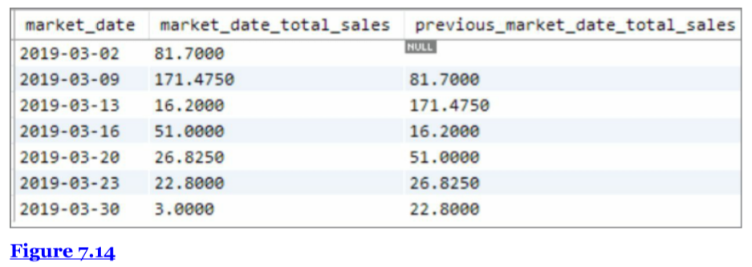

Chapter 7 Window Functions and Subqueries
7.1 Chapter Notes
Like aggregates, windows functions can operate across multiple rows. However the records don’t have to be grouped in the output. They can return group-level information alongside each row.
As an example, here’s the kind of aggregation we’ve seen before:
SELECT vendor_id, MAX(original_price) AS highest_price
FROM vendor_inventory
GROUP BY vendor_id
ORDER BY vendor_id| vendor_id | highest_price |
|---|---|
| 4 | 0.50 |
| 7 | 6.99 |
| 8 | 18.00 |
By contrast, using window functions we can see the price of each product and compare it against the highest price directly.
SELECT DISTINCT vendor_id, product_id, original_price,
MAX(original_price) OVER (PARTITION BY vendor_id) AS highest_price
FROM vendor_inventory
ORDER BY vendor_id, product_id| vendor_id | product_id | original_price | highest_price |
|---|---|---|---|
| 4 | 16 | 0.50 | 0.50 |
| 7 | 1 | 6.99 | 6.99 |
| 7 | 2 | 3.49 | 6.99 |
| 7 | 3 | 0.50 | 6.99 |
| 7 | 4 | 4.00 | 6.99 |
| 8 | 5 | 6.50 | 18.00 |
| 8 | 7 | 18.00 | 18.00 |
| 8 | 8 | 18.00 | 18.00 |
The first window functions introduced are ranking functions. The following code ranks each vendor’s products by price from high to low. Each vendor’s highest price product is given a 1, their second highest price gets a 2, and so on.
SELECT vendor_id, market_date, product_id, original_price,
ROW_NUMBER() OVER (PARTITION BY vendor_id ORDER BY original_price DESC) AS price_rank
FROM vendor_inventory
ORDER BY price_rank, vendor_id
LIMIT 10| vendor_id | market_date | product_id | original_price | price_rank |
|---|---|---|---|---|
| 4 | 2019-06-01 | 16 | 0.50 | 1 |
| 7 | 2019-07-03 | 1 | 6.99 | 1 |
| 8 | 2019-04-03 | 7 | 18.00 | 1 |
| 4 | 2019-06-05 | 16 | 0.50 | 2 |
| 7 | 2019-07-06 | 1 | 6.99 | 2 |
| 8 | 2019-04-06 | 7 | 18.00 | 2 |
| 4 | 2019-06-08 | 16 | 0.50 | 3 |
| 7 | 2019-07-10 | 1 | 6.99 | 3 |
| 8 | 2019-04-10 | 7 | 18.00 | 3 |
| 4 | 2019-06-12 | 16 | 0.50 | 4 |
ROW_NUMBER increments up the count even if two rows have the same value. I.e. you can see in the above table that vendor_id 4 has multiple products priced at $0.50, but one gets rank 1 and the others get rank 2,3 and so on.
The chapter introduces subqueries. We can use them to find the most expensive product from each vendor. This is a subquery, it treats the results of the inner query as a table, and then queries that table.
SELECT * FROM(
SELECT vendor_id, market_date, product_id, original_price,
ROW_NUMBER() OVER (PARTITION BY vendor_id ORDER BY original_price DESC) AS price_rank
FROM vendor_inventory
ORDER BY vendor_id
) AS x
WHERE x.price_rank = 1| vendor_id | market_date | product_id | original_price | price_rank |
|---|---|---|---|---|
| 4 | 2019-06-01 | 16 | 0.50 | 1 |
| 7 | 2019-07-03 | 1 | 6.99 | 1 |
| 8 | 2019-04-03 | 7 | 18.00 | 1 |
The chapter explains why we can’t just use the WHERE clause:
The reason we have to structure this as a subquery is that the entire dataset has to be processed in order for the window function to find the highest price per vendor. So we can’t filter the results using a WHERE clause (which you’ll remember evaluates the conditional statements row by row) because when that filtering is applied, the ROW_NUMBER has not yet been calculated for every row.
The window functions RANK and DENSE RANK have the same syntax as ROW_NUMBER, but do different things. RANK works like ROW_NUMBER, but gives rows with the same value the same ranking. If there is a tie for second among two rows, for example, both rows would get the value 2, and there would be no row assigned value 3. The next value assigned would be 4. DENSE RANK does the same but doesn’t skip over rankings after a tie. I.e. a value may be assigned a 3 even if there are more than 2 rows ahead of it.
The function NTILE assigns quantiles. The following code breaks items into ten groups based on original_price, assigning a 1 to the highest priced tenth.
We can use subqueries to filter on the price_ntile row, in this case returning the top tenth only.
SELECT * FROM(
SELECT vendor_id, market_date, product_id, original_price,
NTILE(10) OVER (ORDER BY original_price DESC) AS price_ntile
FROM vendor_inventory
ORDER BY original_price DESC
) AS x
WHERE x.price_ntile = 1
LIMIT 5| vendor_id | market_date | product_id | original_price | price_ntile |
|---|---|---|---|---|
| 8 | 2019-04-03 | 7 | 18 | 1 |
| 8 | 2019-04-06 | 7 | 18 | 1 |
| 8 | 2019-04-10 | 7 | 18 | 1 |
| 8 | 2019-04-13 | 7 | 18 | 1 |
| 8 | 2019-04-17 | 7 | 18 | 1 |
NTILE works on row counts, not on values specified in the ORDER BY clause, so two rows with the same original_price could end up in different buckets.
We can also use the aggregate functions we’ve already seen as window functions. E.g. if we want to compare each row’s value to the average value of that group.
Here we calculate the average price of products on each date:
SELECT vendor_id, market_date, product_id, original_price,
AVG(original_price) OVER (PARTITION BY market_date) AS average_cost_product_by_market_date
FROM vendor_inventory
LIMIT 5| vendor_id | market_date | product_id | original_price | average_cost_product_by_market_date |
|---|---|---|---|---|
| 7 | 2019-04-03 | 4 | 4.0 | 11.625 |
| 8 | 2019-04-03 | 5 | 6.5 | 11.625 |
| 8 | 2019-04-03 | 7 | 18.0 | 11.625 |
| 8 | 2019-04-03 | 8 | 18.0 | 11.625 |
| 7 | 2019-04-06 | 4 | 4.0 | 11.625 |
We can use a simiar query to quickly see how many products each vendor brought on each date, without aggregating:
SELECT vendor_id, market_date, product_id, original_price,
COUNT(product_id) OVER (PARTITION BY vendor_id, market_date) AS vendor_products_per_date
FROM vendor_inventory
ORDER BY vendor_id DESC, market_date
LIMIT 10| vendor_id | market_date | product_id | original_price | vendor_products_per_date |
|---|---|---|---|---|
| 8 | 2019-04-03 | 5 | 6.5 | 3 |
| 8 | 2019-04-03 | 7 | 18.0 | 3 |
| 8 | 2019-04-03 | 8 | 18.0 | 3 |
| 8 | 2019-04-06 | 5 | 6.5 | 3 |
| 8 | 2019-04-06 | 7 | 18.0 | 3 |
| 8 | 2019-04-06 | 8 | 18.0 | 3 |
| 8 | 2019-04-10 | 5 | 6.5 | 3 |
| 8 | 2019-04-10 | 7 | 18.0 | 3 |
| 8 | 2019-04-10 | 8 | 18.0 | 3 |
| 8 | 2019-04-13 | 5 | 6.5 | 3 |
Another use for window functions is to calculate running totals. In the code below we don’t partition by anything, but do use the ORDER BY clause inside the window query.
However we could use a partition to get individual running totals for each customer, for example.
SELECT customer_id, market_date, vendor_id, product_id, quantity * cost_to_customer_per_qty AS price,
SUM(quantity * cost_to_customer_per_qty) OVER (ORDER BY market_date, transaction_time, customer_id, product_id)
AS running_total_purchases
FROM customer_purchases
LIMIT 10| customer_id | market_date | vendor_id | product_id | price | running_total_purchases |
|---|---|---|---|---|---|
| 9 | 2019-04-03 | 8 | 8 | 36.0 | 36.0 |
| 9 | 2019-04-03 | 8 | 7 | 18.0 | 54.0 |
| 9 | 2019-04-03 | 8 | 5 | 6.5 | 60.5 |
| 9 | 2019-04-03 | 8 | 7 | 36.0 | 96.5 |
| 6 | 2019-04-03 | 8 | 5 | 6.5 | 103.0 |
| 9 | 2019-04-03 | 8 | 5 | 6.5 | 109.5 |
| 23 | 2019-04-03 | 8 | 7 | 18.0 | 127.5 |
| 23 | 2019-04-03 | 8 | 7 | 36.0 | 163.5 |
| 23 | 2019-04-03 | 8 | 8 | 54.0 | 217.5 |
| 7 | 2019-04-03 | 7 | 4 | 20.0 | 237.5 |
The functions LAG and LEAD allow you to use values a specified number of steps before or after the current row. The code below returns the booth number most recently used by each vendor.
SELECT market_date, vendor_id, booth_number,
LAG(booth_number,1) OVER (PARTITION BY vendor_id ORDER BY market_date,vendor_id) AS previous_booth_number
FROM farmers_market.vendor_booth_assignments
ORDER BY market_date, vendor_id, booth_number
LIMIT 10| market_date | vendor_id | booth_number | previous_booth_number |
|---|---|---|---|
| 2019-04-03 | 1 | 2 | NA |
| 2019-04-03 | 3 | 1 | NA |
| 2019-04-03 | 4 | 7 | NA |
| 2019-04-03 | 7 | 11 | NA |
| 2019-04-03 | 8 | 6 | NA |
| 2019-04-03 | 9 | 8 | NA |
| 2019-04-06 | 1 | 2 | 2 |
| 2019-04-06 | 3 | 1 | 1 |
| 2019-04-06 | 4 | 7 | 7 |
| 2019-04-06 | 7 | 11 | 11 |
We can check when vendors change booths by wrapping the above query in another query:
SELECT * FROM(
SELECT market_date, vendor_id, booth_number,
LAG(booth_number,1) OVER (PARTITION BY vendor_id ORDER BY market_date,vendor_id) AS previous_booth_number
FROM farmers_market.vendor_booth_assignments
ORDER BY market_date, vendor_id, booth_number
) AS x
WHERE x.booth_number != x.previous_booth_number
LIMIT 5| market_date | vendor_id | booth_number | previous_booth_number |
|---|---|---|---|
| 2019-04-10 | 1 | 7 | 2 |
| 2019-04-10 | 4 | 2 | 7 |
| 2019-04-13 | 1 | 2 | 7 |
| 2019-04-13 | 4 | 7 | 2 |
| 2019-06-01 | 4 | 11 | 7 |
The next query combines aggregation and LAG, first calculating total sales on each date, and creating a column with the previous date’s total sales.
SELECT market_date,
SUM(quantity * cost_to_customer_per_qty) AS market_date_total_sales,
LAG(SUM(quantity * cost_to_customer_per_qty), 1) OVER (ORDER BY market_date) AS
previous_market_date_total_sales
FROM customer_purchases
GROUP BY market_date
ORDER BY market_date
LIMIT 10| market_date | market_date_total_sales | previous_market_date_total_sales |
|---|---|---|
| 2019-04-03 | 475.0 | NA |
| 2019-04-06 | 549.5 | 475.0 |
| 2019-04-10 | 505.0 | 549.5 |
| 2019-04-13 | 377.0 | 505.0 |
| 2019-04-17 | 493.5 | 377.0 |
| 2019-04-20 | 455.5 | 493.5 |
| 2019-04-24 | 366.0 | 455.5 |
| 2019-04-27 | 444.5 | 366.0 |
| 2019-05-01 | 523.0 | 444.5 |
| 2019-05-04 | 497.0 | 523.0 |
LEAD works similarly, but fetches values from rows ahead.
7.2 Exercises
Ex. 1
Question
Do the following two steps:
Write a query that selects from the customer_purchases table and numbers each customer’s visits to the farmer’s market (labeling each market date with a different number). Each customer’s first visit is labeled 1, second visit is labeled 2, etc. (We are of course not counting visits where no purchases are made, because we have no record of those.) You can either display all rows in the customer_purchases table, with the counter changing on each new market date for each customer, or select only the unique market dates per customer (without purchase details) and number those visits. HINT: One of these approaches uses ROW_NUMBER() and one uses DENSE_RANK() .
Reverse the numbering of the query from a part so each customer’s most recent visit is labeled 1, then write another query that uses this one as a subquery and filters the results to only the customer’s most recent visit.
Answer
Some customers make more than one purchase on a certain date, and so using ROW_NUMBER will increment up multiple times in one day. We can use DENSE_RANK() and DISTINCT if we only want to increment up on distinct days.
SELECT DISTINCT market_date, customer_id,
DENSE_RANK() OVER (PARTITION BY customer_id ORDER BY market_date) AS customer_visit_num
FROM customer_purchases
ORDER BY customer_id, market_date
LIMIT 5| market_date | customer_id | customer_visit_num |
|---|---|---|
| 2019-04-06 | 1 | 1 |
| 2019-04-13 | 1 | 2 |
| 2019-04-17 | 1 | 3 |
| 2019-04-20 | 1 | 4 |
| 2019-04-24 | 1 | 5 |
Part b:
SELECT customer_id, market_date AS most_recent_visit FROM (
SELECT DISTINCT market_date, customer_id,
DENSE_RANK() OVER (PARTITION BY customer_id ORDER BY market_date DESC) AS customer_visit_num
FROM customer_purchases
) AS x
WHERE x.customer_visit_num =1
LIMIT 10| customer_id | most_recent_visit |
|---|---|
| 1 | 2020-10-10 |
| 2 | 2020-10-10 |
| 3 | 2020-10-07 |
| 4 | 2020-10-03 |
| 5 | 2020-10-10 |
| 6 | 2020-10-10 |
| 7 | 2020-10-10 |
| 8 | 2020-10-10 |
| 9 | 2020-10-10 |
| 10 | 2020-10-10 |
Ex. 2
Question
Using a COUNT() window function, include a value along with each row of the customer_purchases table that indicates how many different times that customer has purchased that product_id.
Answer
SELECT DISTINCT customer_id, product_name,
COUNT(*) OVER (PARTITION BY customer_id, cp.product_id) AS times_purchased
FROM customer_purchases AS cp
LEFT JOIN product AS p
ON cp.product_id = p.product_id
LIMIT 5| customer_id | product_name | times_purchased |
|---|---|---|
| 1 | Habanero Peppers - Organic | 9 |
| 1 | Jalapeno Peppers - Organic | 13 |
| 1 | Poblano Peppers - Organic | 29 |
| 1 | Banana Peppers - Jar | 64 |
| 1 | Whole Wheat Bread | 47 |
Ex. 3
Question
In the last query associated with Figure 7.14 from the chapter, we used LAG and sorted by market_date. Can you think of a way to use LEAD in place of LAG , but get the exact same output?
Answer
Here’s the image:

I won’t be able to get the same output because the database has changed since the book was published, but here’s the query in the chapter. I’ll try to recreate these results:
SELECT market_date,
SUM(quantity * cost_to_customer_per_qty) AS market_date_total_sales,
LAG(SUM(quantity * cost_to_customer_per_qty), 1) OVER (ORDER BY market_date) AS
previous_market_date_total_sales
FROM farmers_market.customer_purchases
GROUP BY market_date
ORDER BY market_date
LIMIT 10| market_date | market_date_total_sales | previous_market_date_total_sales |
|---|---|---|
| 2019-04-03 | 475.0 | NA |
| 2019-04-06 | 549.5 | 475.0 |
| 2019-04-10 | 505.0 | 549.5 |
| 2019-04-13 | 377.0 | 505.0 |
| 2019-04-17 | 493.5 | 377.0 |
| 2019-04-20 | 455.5 | 493.5 |
| 2019-04-24 | 366.0 | 455.5 |
| 2019-04-27 | 444.5 | 366.0 |
| 2019-05-01 | 523.0 | 444.5 |
| 2019-05-04 | 497.0 | 523.0 |
Here’s my attempt, I changed the sorting order inside the window query.
SELECT market_date,
SUM(quantity * cost_to_customer_per_qty) AS market_date_total_sales,
LEAD(SUM(quantity * cost_to_customer_per_qty), 1) OVER (ORDER BY market_date DESC) AS
previous_market_date_total_sales
FROM farmers_market.customer_purchases
GROUP BY market_date
ORDER BY market_date
LIMIT 10| market_date | market_date_total_sales | previous_market_date_total_sales |
|---|---|---|
| 2019-04-03 | 475.0 | NA |
| 2019-04-06 | 549.5 | 475.0 |
| 2019-04-10 | 505.0 | 549.5 |
| 2019-04-13 | 377.0 | 505.0 |
| 2019-04-17 | 493.5 | 377.0 |
| 2019-04-20 | 455.5 | 493.5 |
| 2019-04-24 | 366.0 | 455.5 |
| 2019-04-27 | 444.5 | 366.0 |
| 2019-05-01 | 523.0 | 444.5 |
| 2019-05-04 | 497.0 | 523.0 |